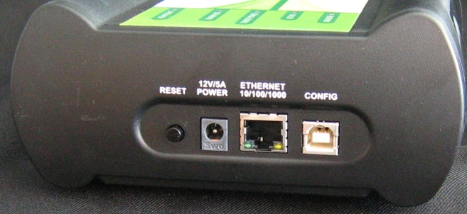
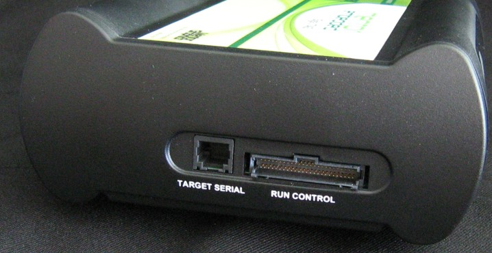

LEDs on Sourcery Probe Professional
Figure 5‑1 shows the various LEDs of the probe.
Figure 5‑1. Sourcery Probe Professional — Top View
Heartbeat Indicator
The Heartbeat LED (labeled HEARTBEAT) indicates the status of communication between the probe and the network:
- The LED is red until the probe boot code starts running.
- The LED flashes orange (1Hz) during configuration of the network interface.
- The LED flashes green (1Hz) after the network interface is successfully configured and the probe is ready for use. During firmware updates, the LED flashes green at a higher frequency (5Hz).
| Note | |
|
Do not remove power, unplug the network, or press the reset button during firmware updates. |
|
- The LED is unlit if the probe is not powered on.
- The LED flashes red if the probe is overheating.
Run/Pause Indicator
The status LED (labeled RUN/PAUSE) indicates the state of the target:
- The LED is initially unlit and remains so until the debugger connects to the probe.
- The LED is green when the target is in run mode.
- The LED is red when the target is in pause mode.
- The LED is orange when the target is in mixed mode.
Target Power Indicator
The target power LED (labeled TARGET POWER) indicates whether the probe detects target power.
- The LED is green when target power is detected.
- The LED is unlit when no target power is detected.
Active Indicator
The active LED (labeled ACTIVE) is unused at this time.
Measure Indicator
The measure LED (labeled MEASURE) is unused at this time.
RJ-45 Ethernet Connector with Link and Activity Indicators
The Sourcery Probe Professional interface consists of an RJ-45 connector and a built-in twisted pair MAU that connects directly to 10/100/1000BaseT twisted pair networks. See Connecting the Probe to the Network for more information on connecting to a network.
The probe link and activity indicators are integrated into the RJ-45 probe connector:
- The yellow indicator is turned on when the probe is connected to any network, and flickers when data is being transferred across the network.
- The green indicator is turned on when the probe is connected to a 1000BaseT network and flickers when data is being transferred across the network.
Sourcery Probe Professional Status Indicators
The probe uses LEDs to indicate its status. If you encounter problems related to Ethernet communication, consult the status indicator information in Table 5‑1.
Table 5‑1. Sourcery Probe Professional Status Indicators
Host Connectors on Sourcery Probe Professional
Figure 5‑2 shows the host connectors of the probe.
Figure 5‑2. Sourcery Probe Professional — Host End View
Reset Button
The reset button is used to reboot the probe.
Power Connector
The Power connector on the probe is used to connect the DC power supply cable.
RJ-45 Ethernet Connector
Use the Ethernet connector on the probe to connect to an 10/100/1000BaseT Ethernet.
Config USB Connector
The Config USB port on the probe acts as a virtual serial device that supports RS-232 communication protocol at 115200 baud. The Config USB port is used for configuring network communication, entering routing tables, and diagnostics.
Target Connectors on the Sourcery Probe Professional
Figure 5‑3 shows the target connectors of the probe.
Figure 5‑3. Sourcery Probe Professional — Target End View
RJ-25 Target Serial Connector
The probe provides a target serial port that can be configured to access your target’s serial port. This is useful if your host computer is not near the target and you need to access your target’s serial port remotely over your network.
Table 5‑2 shows the pinout definition of the target serial port.
Table 5‑2. Pinout Definitions for Target Serial Port
|
Pin |
Signal |
|---|---|
|
1 |
Ready to Send (RTS) |
|
2 |
Ground |
|
3 |
Receive Data (RxD) |
|
4 |
Transmit Data (TxD) |
|
5 |
Ground |
|
6 |
Clear to Send (CTS) |
| Note | |
|
Pin 1 is located on the right side when you view the RJ-11 socket with the locking tab on the bottom. |
|
Run Control Probe Tip Cable Connector
The probe tip ribbon cable is connected to the 50-pin connector on the probe.
Debug Port Connector
The debug port socket is on the end of the probe tip and is used to connect the probe to a debug port header on your target system.
| Note | |
|
Ensure that Pin 1 of the probe tip is connected to the Pin 1 of the header. |
|
Sourcery Probe Professional Specifications
The dimensions of the probe are shown in Figure 5‑4.